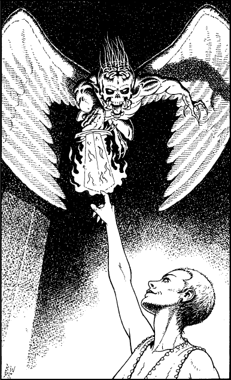

74
The creature that is diving towards you suddenly freezes in mid-air. The morbid fear of death that had gripped your heart quickly evaporates, but you are left with a feeling of deep unease as your senses detect that something extraordinary is taking place around you. The hall has become filled with a deadly silence and everything, including the tongues of flame trailing from the creature’s sword, and the blazing fire in the grate, is utterly frozen. It is as if time itself is standing still.
Wolf’s Bane is a frozen statue, his face fixed in the malevolent sneer he was wearing in gleeful anticipation that you were about to meet your doom. You are beginning to think that perhaps you have been killed and that this is life after death, when suddenly you glimpse a blurred movement out of the corner of your eye.
From the shadows cast by the gallery there steps a young teenage girl. She is dressed in a leather jerkin and threadbare trousers which are cut short at the knees. She is barefoot and appears to be armed only with a mischievous grin.
‘Who … who are you? Why are you here?’ you stammer, dumbly. Casually she walks towards you and reaches up to touch a finger to the frozen fiery sword clutched in the taloned hands of Wolf’s Bane’s winged minion. There is a gentle Pop! and the creature disappears.

‘I’m Alyss, and I do hate cheats,’ she says, as she wanders over to where Wolf’s Bane is standing immobile. Cheekily she pokes out her tongue at him and then she spins on her heel to face you.
‘Now, perhaps you can finish what you came here to do, Lone Wolf,’ she says, and claps her hands three times. A sudden rush of noise assails your ears and your senses reel as the reality of time comes flooding back into the hall.